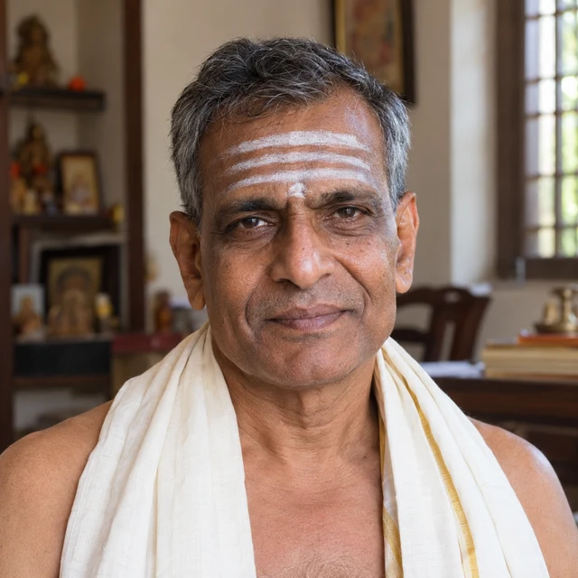

✦OFFERFirst Consultation Free · Code: FIRSTFREE
✦
Vedic astrology for modern life
Ancient wisdom.
Personal guidance.
Consult trusted, experienced Vedic astrologers for clarity on life, relationships, career, health and more.
♦Verified Astrologers♟Private & Secure★Trusted by 10L+ Users
▣15+ Yearsof Vedic Expertise
♨50K+Consultations Monthly
Featured Astrologers
● OnlineAcharya Devendra Ji ●Vedic Astrology, Kundli, Career
★ 4.9 (12.4K)18+ Yrs
● OnlineDr. Meera Sharma ●Marriage, Relationships, Life Path
★ 4.8 (8.9K)12+ Yrs

● OnlinePandit Raghav Joshi ●Finance, Business, Property
★ 4.9 (10.7K)20+ Yrs
● OnlineAcharya Nitin Trivedi ●Health, Remedies, Vastu
★ 4.8 (6.3K)15+ Yrs
♛
Astro Plus
Your premium astrology membershipMore benefits. Deeper insights. Greater guidance.
∞Priority
Consultations%Exclusive
Offers♢Advanced
Reports